「自离开家以来，一路造访稻妻各地，颇长见识。旅途虽贫苦，但以天地为屋宇，万物为诗友，也是很有滋味。」
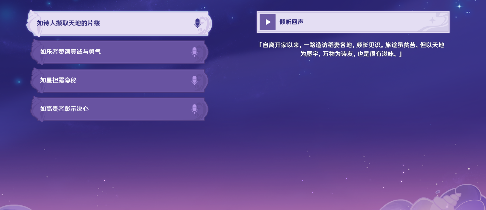「音乐能证明一个人的心。要是没有勇气，就无法弹奏出动听的曲子，而要是缺少了诚意，人就无法与他人取得共鸣。」
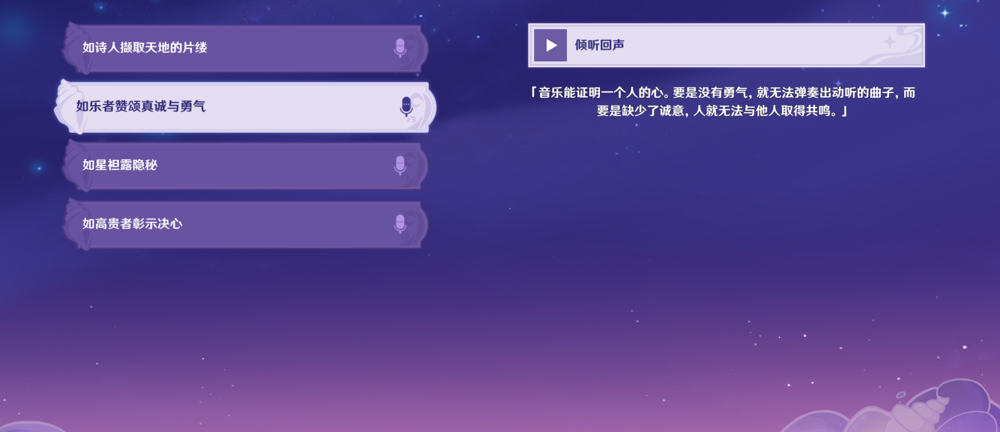「人类对星空的好奇源自本能…要是能在这里读懂一切秘密就好了」
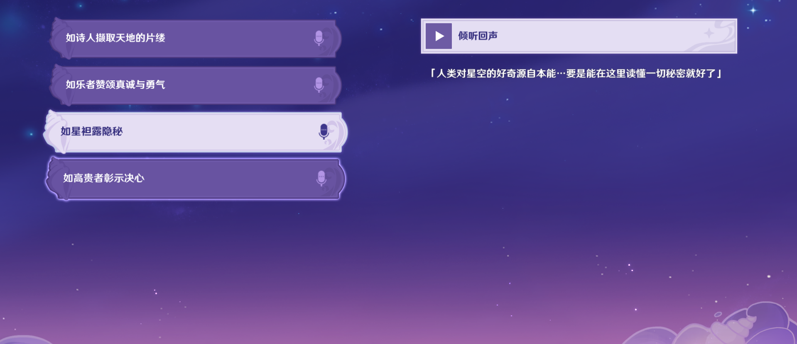「漆黑之扈从奥兹，以你眼中所见的真实为本皇女铺路吧！我所未见之鄙陋，皆为虚幻。」
「小姐的意思是…看不见的缺损便不存在？」
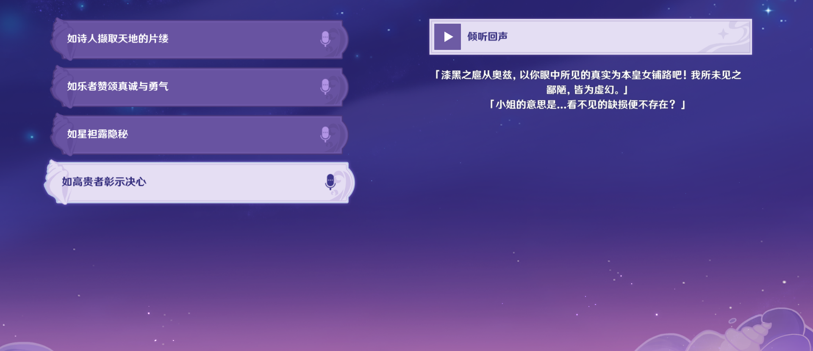「阿加霞，我们休息会儿吧唉，真不知道这些岛上，能不能找到什么可以果腹的东西啊…」
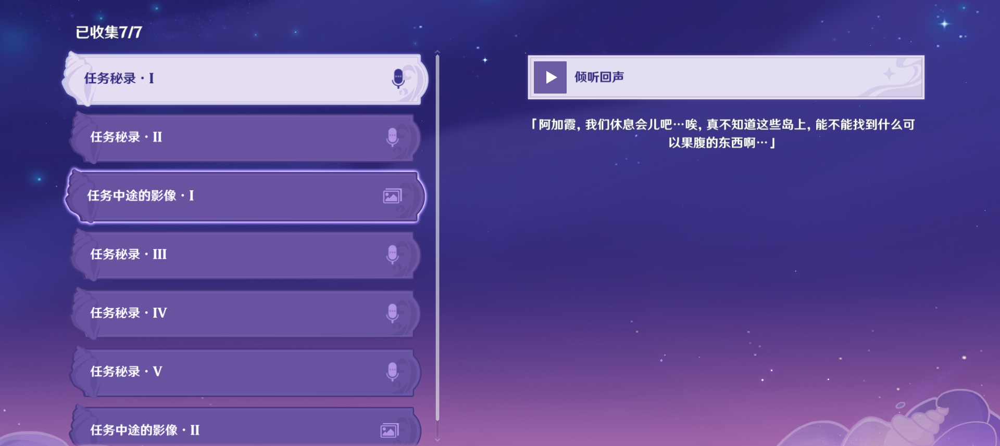「好了，扎哈尔，这个岛上的信号测试已经做完了…希望机器能够顺利启动吧…」
「好、好，我们快点到下一座岛上去吧…快些完成任务，我想早点回到营地休息…」
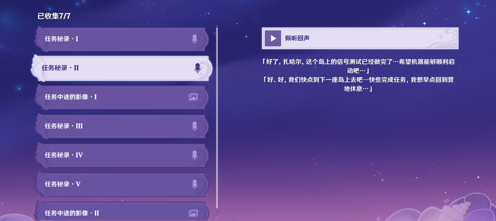「扎哈尔，别勉强了，你看，前面那个山洞…」
「我们先去那边休息一下吧…」
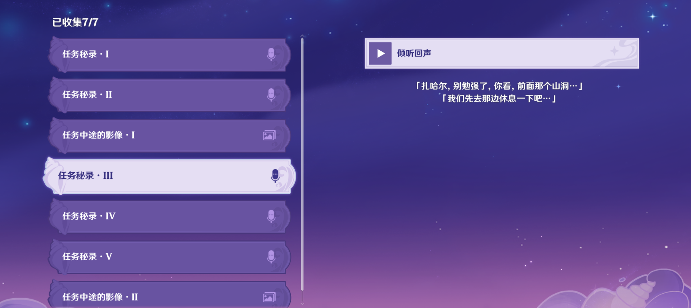「唔…阿加霞，我没关系的…只是肚子有点不舒服而已…
「好了，我找来四个苹果…等好点了你就吃了吧…」
「可是任务…」
「没关系，扎哈尔，任务就由我来…你就去上面好好休息吧。」
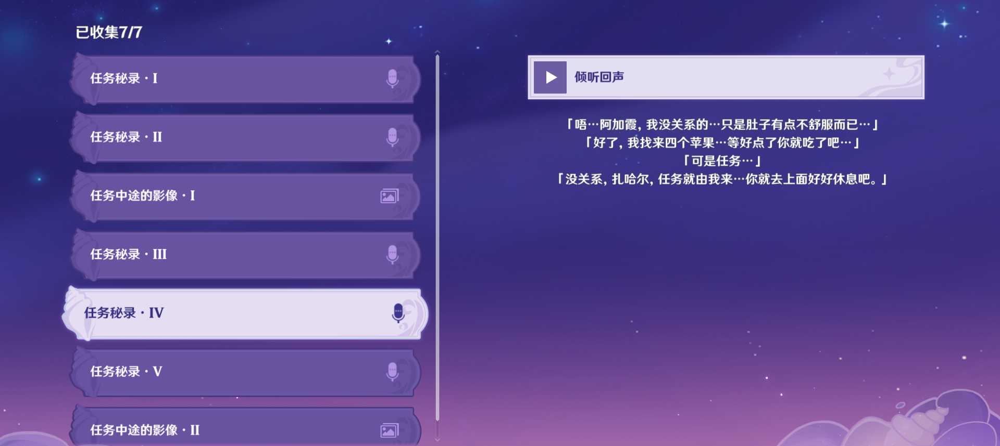「怎么回事…信号测试的标点附近为什么会有这么多丘丘人…」
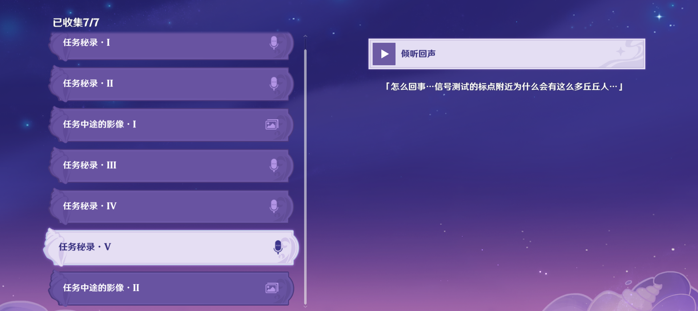「你可是我们之中获得荣誉最多的人，就不能对任务上点心吗…」
「…你什么时候能意识到，荣誉，雅科夫，荣誉才是最重要的！」
「叶夫卡，连累大家我很抱歉…但是我对你说的荣誉，可是半点都不在乎」
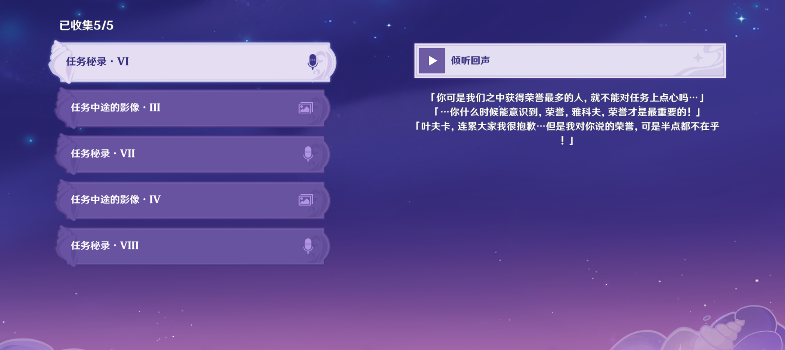「可恶，他到底把那个徽记扔哪去了…」
「再这么找下去也不是办法，得先到下个岛去，不能让雅科夫一个人…」
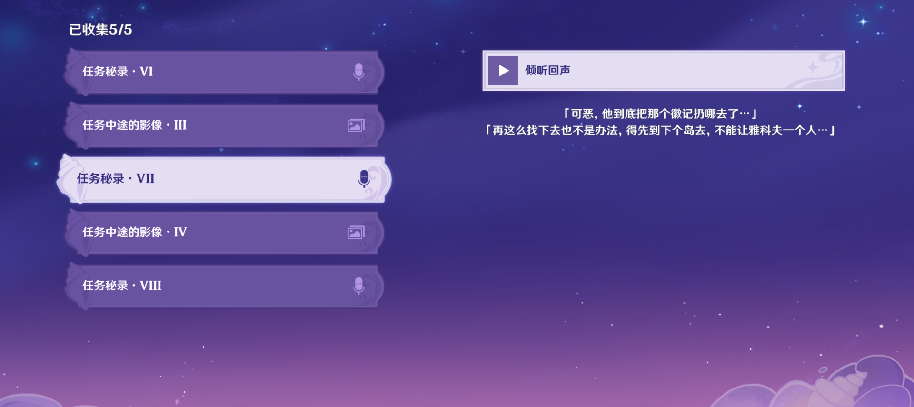「不对，雅科夫怎么不见了…那是什么东西…」
「到底怎么回事，雅科夫穿过去之后，周围的光就依次熄灭了…」
「那个顺序是…白色、绿色…红色、蓝色？」
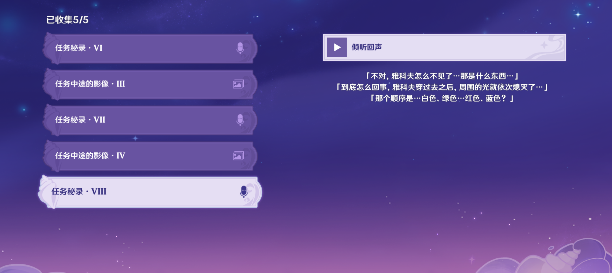「扎哈尔，怎么了，从刚才起就捂着肚子，你是不是有点不舒服…」
「没有的事，阿加霞，只是、只是昨晚有点受凉了，休息会儿就好了，不碍事的！」
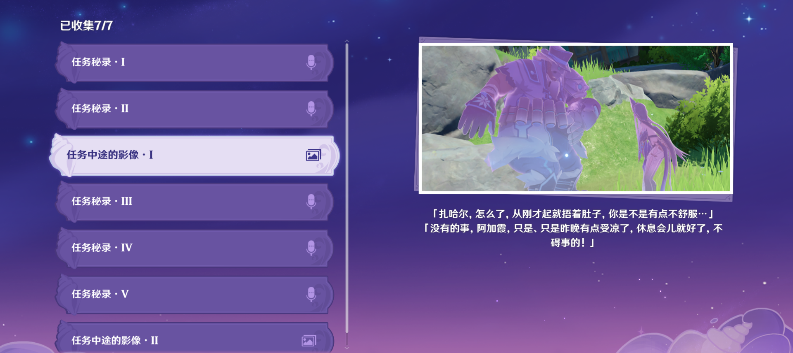 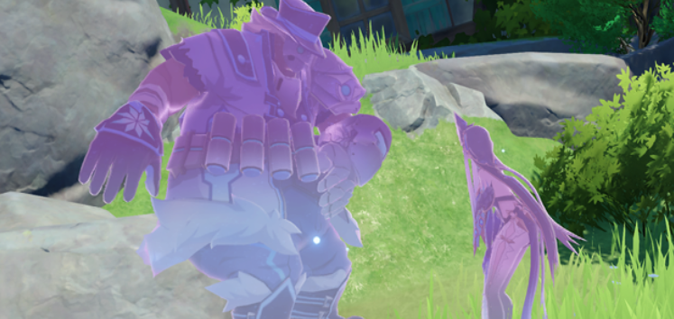「可、可恶的丘丘人！」
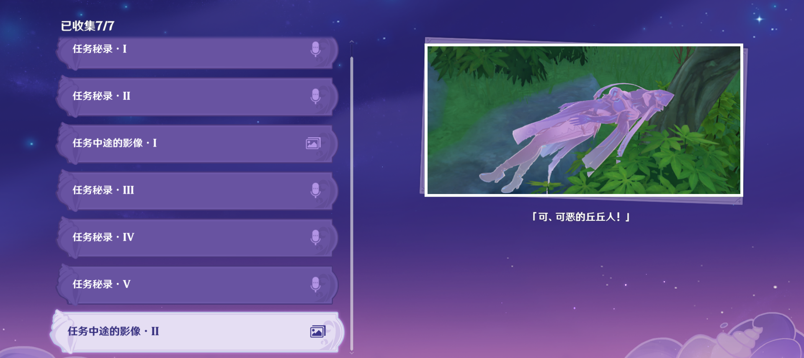 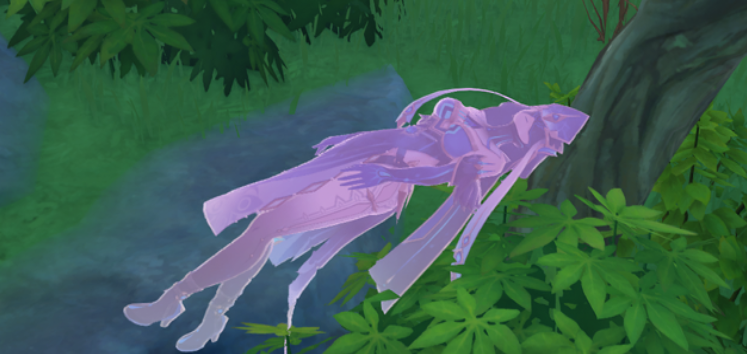「又在说什么荣誉高于一切的话！荣誉荣誉荣誉，你脑子里就没点别的东西吗…你不就是想要这个吗，你自己捡去吧！」
「不，不要扔那个，那可是你得过军功的证明啊…」
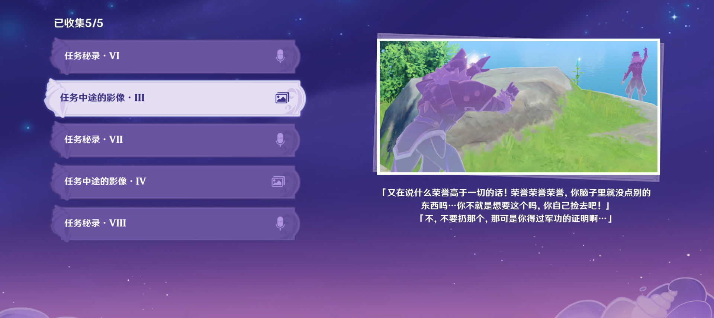 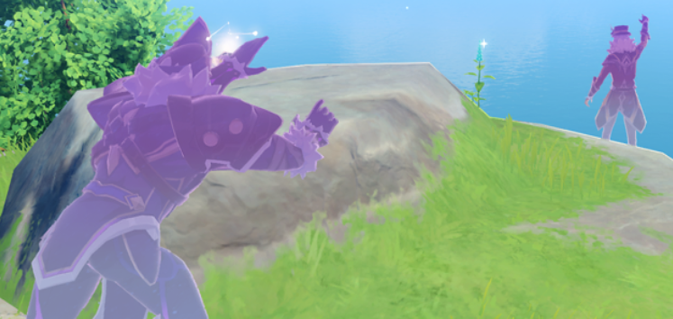「这是一个什么东西…那一侧的场景…」
「那里面…有什么？」
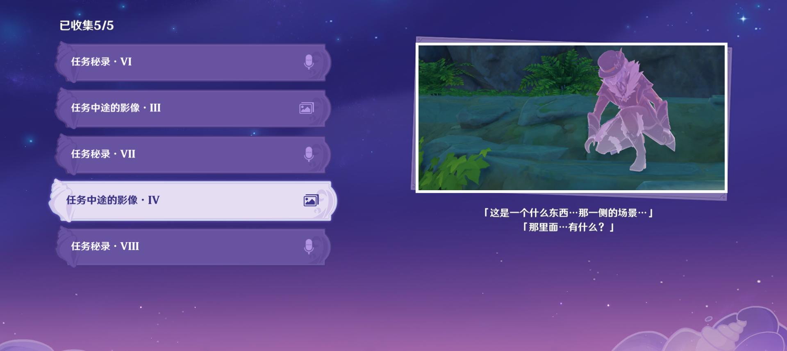 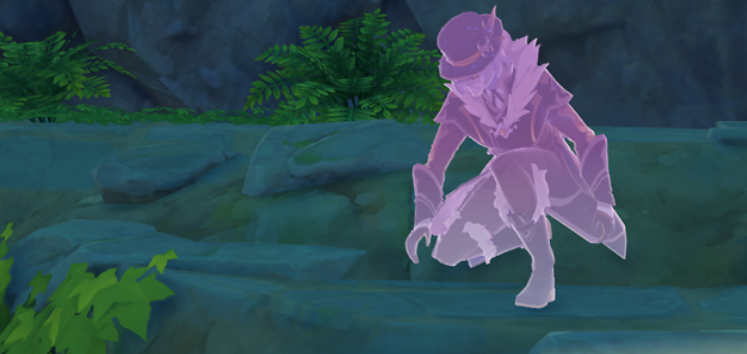